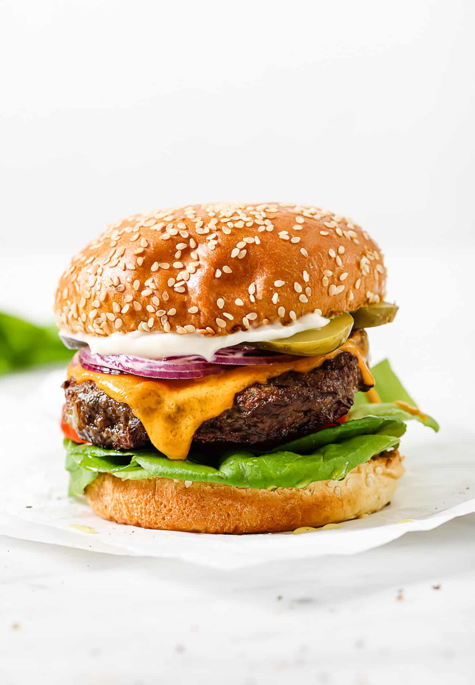

Home
Here is my Hamburger Recipe

Description
This hamburger recipe was passed down from generation to generation, household to household. The classic burger. Featuring your choice of ground beef, we take a slightly different approach with the rest of the ingredients. You won't want for flavor after you're done with this burger, in fact, you might never want a single other piece of food again!
Ingredients
These ingredients might seem crazy but don't knock em till you try them!
- 2 pounds extra-lean ground beef
- 1 (1 ounce) package dry onion soup
- 1 egg, lightly beaten
- 2 teaspoons hot pepper sauce
- 2 Teaspoons Worcestershire sauce
- 1/4 Teaspoon ground black pepper
- 3/4 cup rolled oats
Steps
- Preheat an outdoor grill for medium high heat and lightly oil grate
- In a large bowl, combine the beef, onion soup mix, egg, hot sauce, and oats. Shape into 6 patties.
- Grill pattie over medium high heat for 10 to 20 minutes, or to desired doneness.
Now you should have 6 premium burgers that will knock your socks off! Enjoy!